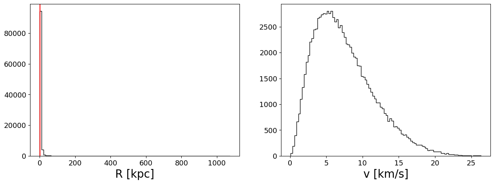
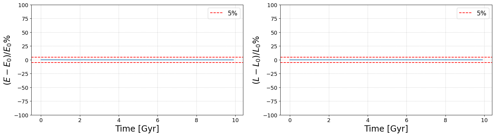
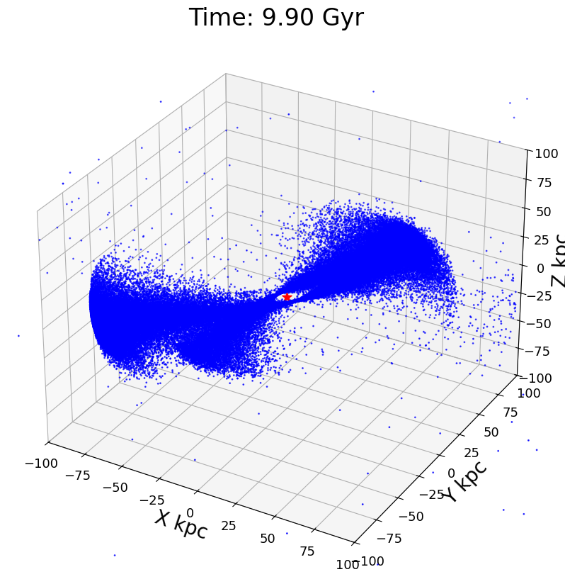
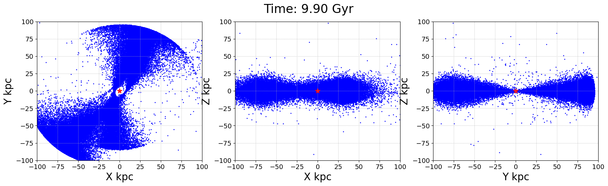

Plummer Sphere#
code_length = 10.0 * u.kpc
code_mass = 1e8 * u.Msun
G = 1
code_units = CodeUnits(code_length, code_mass, G=G)
# Define the
config = SimulationConfig(N_particles=100_000,
return_snapshots=True,
num_snapshots=100,
num_timesteps=1000,
external_accelerations=(NFW_POTENTIAL, ),
acceleration_scheme=DIRECT_ACC,
softening=(0.1 * u.kpc).to(code_units.code_length).value) #default values
params = SimulationParams(t_end = (10 * u.Gyr).to(code_units.code_time).value,
Plummer_params= PlummerParams(Mtot=(1e8 * u.Msun).to(code_units.code_mass).value,
a=(1 * u.kpc).to(code_units.code_length).value),
NFW_params = NFWParams(Mvir=(1e12 * u.Msun).to(code_units.code_mass).value,
r_s = (20 * u.kpc).to(code_units.code_length).value,
c = 10,),
G=G, )
print(config)
print(params)
SimulationConfig(N_particles=100000, dimensions=3, return_snapshots=True, num_snapshots=100, fixed_timestep=True, num_timesteps=1000, softening=0.010000000000000002, integrator=0, acceleration_scheme=0, batch_size=10000, double_map=False, external_accelerations=(0,))
SimulationParams(G=1, t_end=6.7070874092034565, Plummer_params=PlummerParams(a=0.1, Mtot=1.0), NFW_params=NFWParams(Mvir=10000.0, r_s=2.0, c=10, d_c=1.4888043637074615), PointMass_params=PointMassParams(M=1.0), MN_params=MNParams(M=65000000000.0, a=3.0, b=0.28))
#set up the particles in the initial state
positions, velocities, mass = Plummer_sphere(key=random.PRNGKey(0), params=params, config=config)
#Plummer sphere distribution
fig = plt.figure(figsize=(15, 5))
ax = fig.add_subplot(121)
ax.hist((jnp.linalg.norm(positions, axis=1) * code_units.code_length).to(u.kpc), bins=100, histtype='step', color='k')
ax.axvline((params.Plummer_params.a*code_units.code_length).to(u.kpc).value, color='r', label='Plummer a')
ax.set_xlabel('R [kpc]')
ax = fig.add_subplot(122)
ax.hist(jnp.linalg.norm((velocities * code_units.code_velocity).to(u.km/u.s).value, axis=1), bins=100, histtype='step', color='k')
ax.set_xlabel('v [km/s]')
plt.show()

#put the Plummer sphere in a ciruclar orbit around the NFW halo
rp=100*u.kpc.to(code_units.code_length)
mass_inside_rp = 4*jnp.pi*params.NFW_params.d_c*params.NFW_params.r_s**3*(jnp.log(1+rp/params.NFW_params.r_s)-rp/(rp+params.NFW_params.r_s))
if len(config.external_accelerations)>0:
pos, vel, _ = ic_two_body(mass_inside_rp, params.Plummer_params.Mtot, rp=rp, e=0., config=config, params=params)
velocities = velocities + vel[1]
positions = positions + pos[1]
#initialize the initial state
initial_state = construct_initial_state(positions, velocities)
if config.return_snapshots:
snapshots = jax.block_until_ready(time_integration(initial_state, mass, config, params))
else:
final_state = jax.block_until_ready(time_integration(initial_state, mass, config, params))
energy_angular_momentum_plot(snapshots, code_units, filename='./visualization/image/E_L_Plummer_in_NFWpotential.pdf')

create_3d_gif(snapshots,
ax_lim=rp,
code_units=code_units,
plotting_units_length=u.kpc,
plot_units_time=u.Gyr,
filename='./visualization/gif/simulation_Plummer_in_NFWpotential.gif')

create_projection_gif(snapshots=snapshots,
ax_lim=rp,
code_units=code_units,
plotting_units_length=u.kpc,
plot_units_time=u.Gyr,
filename='./visualization/gif/simulation_projection_Plummer_in_NFWpotential.gif')
